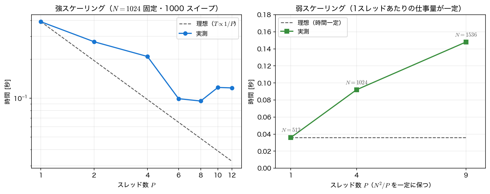
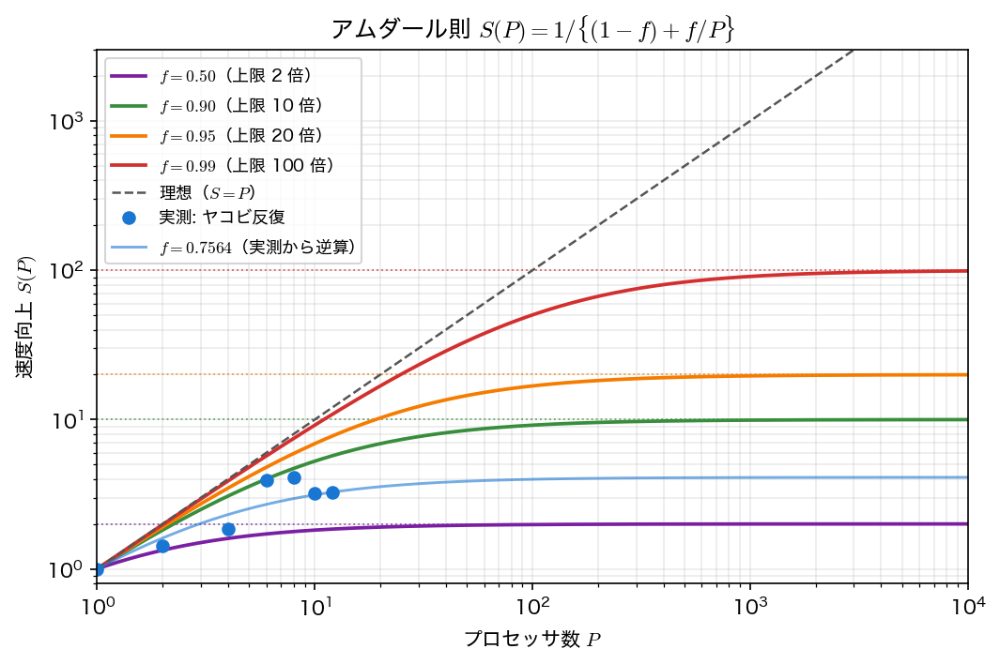
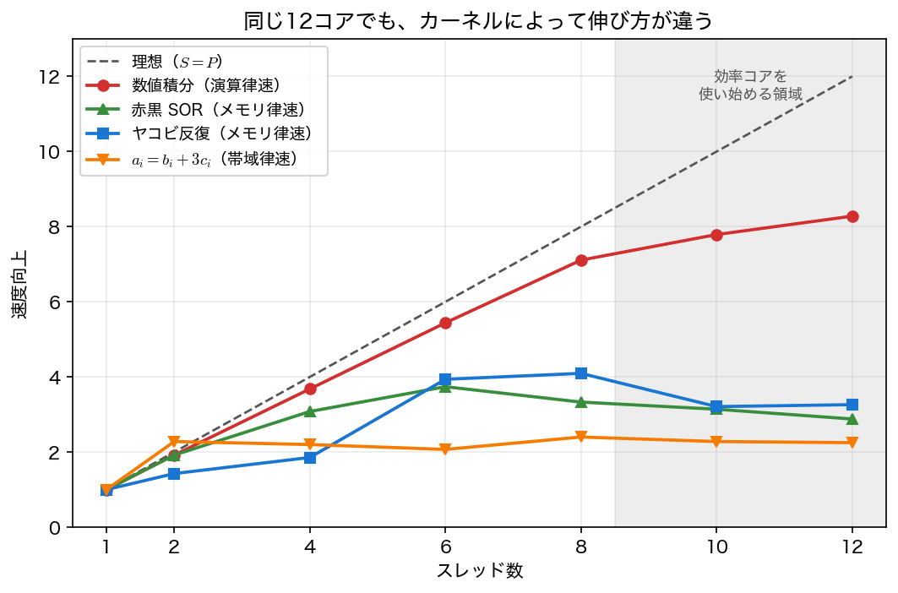

性能を測る
前ページで並列化の書き方を覚えた。ここからは「それで本当に速くなったのか」を測る。
測る対象は第10回の2次元ポアソン方程式のヤコビ反復である。この題材を選んだ理由は明確で、並列化の観点から理想的だからである。
- 各点の更新が完全に独立で、逐次で実行される部分がほとんどない
- 右辺がすべて古い値なので、分担を変えても答えがビット単位で一致する（実測でも残差は全スレッド数で
1.964666454e+01と完全一致する） - 1回のスイープの計算量が全点で等しく、負荷の偏りもない
にもかかわらず、12 スレッドでの速度向上は 3.26 倍にとどまり、しかも 8 スレッドの 4.10 倍より遅くなる。この差を説明することが本ページの目的である。
強スケーリングと弱スケーリング
並列化の性能には、性質の違う2つの測り方がある。
強スケーリング（strong scaling）は、問題の大きさを固定してプロセッサ数 \(P\) を増やす。1台での時間を \(T_1\)、\(P\) 台での時間を \(T_P\) として、
を測る。理想は \(S=P\)、\(E=1\) である。「今ある計算を早く終わらせたい」という要求に対応する。
弱スケーリング（weak scaling）は、1台あたりの仕事量を固定して \(P\) を増やす。2次元問題なら \(N^2/P\) を一定に保つ、つまり \(N\propto\sqrt P\) とする。理想は「時間が一定」である。「同じ時間でもっと大きな問題を解きたい」という要求に対応する。
この2つは別物である。強スケーリングでは \(P\) を増やすほど1台の担当が減り、通信や同期の割合が相対的に増えるので、必ずどこかで頭打ちになる。弱スケーリングは1台の担当が変わらないので、原理的には \(P\) をいくらでも増やせる。スーパーコンピュータの利用が弱スケーリングで語られるのは、そのためである。

アムダール則
速度向上の上限を与えるのがアムダール則（Amdahl's law）である。全体のうち割合 \(f\) が並列化でき、残り \(1-f\) が逐次のままだとすると、\(P\) 台での時間は
なので、
\(P\to\infty\) でも \(1/(1-f)\) を超えられない。逐次部分が全体の 1 % 残るだけで、上限は 100 倍である。

さて、実測の \(S(12)=3.262\) をアムダール則に当てはめて \(f\) を逆算すると
となる。「並列化できているのは 76 % だけ」という結論になる（プログラムは丸めていない \(S\) から \(f=0.7564\) と出しているが、表示した3桁の \(3.262\) を代入すると \(0.7565\) になる——この程度の差は結論に影響しない）。
しかしこの解釈は誤りである。ヤコビ反復のスイープに、逐次で実行される部分はほとんどない。並列領域の外にあるのは、スイープの前後でポインタを入れ替える数命令だけであって、\(1000\) 回のスイープに対して無視できる。
つまり、逆算した \(f=0.7564\) は「並列化していない割合」ではなく、
- メモリ帯域の飽和
- コアの性能差
- スレッドの起動と合流のコスト
- キャッシュの競合
といったあらゆる非理想性をまとめて押し込んだ見かけの数である。
アムダール則は上限を与える式であって、実測を説明する式ではない
実測から \(f\) を逆算するのは、原因を1つの数に丸めて捨てる行為である。「\(f\) が小さいから仕方ない」で止まると、本当の原因——次節で見るメモリ帯域——にたどり着けない。
アムダール則の正しい使い方は事前の見積もりである。「このプログラムのうち 3 割は逐次だから、どれだけ並列化しても 3.3 倍が上限だ。ならば先にそこを削るべきだ」——このように設計の判断材料として使う。
メモリ帯域の壁
真の原因を切り分けるには、性質の違うカーネルを同じ計算機で測って比べるのがよい。
| カーネル | 1要素あたりの演算 | 1要素あたりの転送 | 演算密度 | 12 スレッドでの速度向上 |
|---|---|---|---|---|
| \(\pi\) の数値積分 | 十数演算 | ほぼ 0 バイト | 非常に高い | 8.28 |
| \(a_i=\sin b_i\cos c_i\) | 数十演算 | 24 バイト | 高い | 6.03 |
| ヤコビのスイープ | 6 演算 | 20 バイト程度 | 低い | 3.26 |
| \(a_i=b_i+3c_i\) | 2 演算 | 24 バイト | 非常に低い | 2.25 |
きれいに並ぶ。1バイト転送するあたり何回の演算をするか——これを演算密度（arithmetic intensity）という——が高いカーネルほど、よくスケールしている。
理由は単純である。コアを増やしても、コアが共有しているメモリの帯域は増えない。
\(a_i=b_i+3c_i\)（triad と呼ばれるベンチマーク）の実測を見ると、
- 1スレッド: 0.068 秒 → 実効帯域 70.1 GB/s
- 2スレッド: 0.030 秒 → 159.6 GB/s
- 8スレッド: 0.028 秒 → 168.5 GB/s
2スレッドで既に帯域がほぼ飽和し、その先はいくらスレッドを足しても伸びない。この計算機のメモリ帯域が \(\approx170\) GB/s だからである。1スレッドですら帯域の 4 割を使い切っているので、そもそも伸びしろが 2.4 倍しかない。

差分法の1回のスイープが「足し算数回に対して読み書きが数十バイト」であることは、第12回で計算量を見積もったときにも確認したとおりである。偏微分方程式の差分計算は、本質的にメモリ律速のカーネルである。
これは弱スケーリングが落ちた理由も説明する。\(P\) を増やすと問題も大きくなるが、共有しているメモリの帯域は増えない——だから時間が増える。「計算機を増やす」並列化（次ページ）では事情が変わる。台数を増やせばメモリも一緒に増えるからである。
演算密度を上げる方法
メモリ律速だとわかったとき、スレッドを増やす以外にできることがある。
- ループ融合: 複数のスイープを1回の走査にまとめ、読み込んだデータで多くの演算をする
- ブロック化（タイリング）: 配列を小さな塊に区切り、キャッシュに載っている間に使い切る（第12回のループ順序の発展形）
- アルゴリズムの変更: SOR や共役勾配法に替えてスイープの回数そのものを減らす
最後の1つが、もっとも効く。第10回で見たとおり、ヤコビ法の \(O(N^4)\) を SOR の \(O(N^3)\) にすれば \(N=64\) で 63 倍である。並列化で稼げる 3 倍とは桁が違う。
性能の違うコアが混在する場合
実測をもう一度見ると、速度向上がスレッド数に対して単調ですらない。
| スレッド数 | 1 | 2 | 4 | 6 | 8 | 10 | 12 |
|---|---|---|---|---|---|---|---|
| 速度向上 | 1.000 | 1.427 | 1.856 | 3.937 | 4.095 | 3.210 | 3.262 |
2・4 スレッドが不自然に遅く、6・8 で急に伸び、10・12 でまた落ちる。
原因は、この計算機（Apple M2 Max）のコアが同質でないことにある。性能コア（performance core）8 個と効率コア（efficiency core）4 個が混在しており、後者は消費電力が小さい代わりに遅い。どのスレッドをどのコアに載せるかは OS が決めるので、
- スレッド数が少ないとき、効率コアに載せられると遅くなる（2・4 スレッドの谷）
- スレッド数が性能コアの数（8）を超えると、必ず効率コアが動員される。しかも fork–join の暗黙のバリアがあるので、全体が遅いコアに引きずられる（10・12 での低下）
近年のノート PC・スマートフォンではこの構成が一般的であり、サーバでも NUMA（コアによってメモリまでの距離が違う）という似た非対称性がある。「コアが \(P\) 個ある」は「同じ性能のコアが \(P\) 個ある」を意味しない。
実用上の教訓は次の2つである。
- 最速のスレッド数は測って決める。論理コア数を指定するのが最適とは限らない（この計算機では 8 が最適で、12 は 2 割遅い）
- 性能の測定は、他の負荷がない状態で複数回行い、最小値を採る。本ページの測定はすべて3回試した最小値である
性能を測るときの作法
再現性のある測定のために、最低限守るべきことを挙げておく。
- 最適化を有効にする（
-O2）。最適化なしの逐次版と比べれば、どんな並列化も「速く」見える - 測る範囲を絞る。配列の確保や入力の準備は逐次なので、これを含めると測っているものが変わる（サンプルコードでは
jacobi()の中でスイープの時間だけを計っている） - 複数回測って最小値を採る。OS の割り込みや他のプロセスの影響は、必ず時間を「増やす」方向に働く
- 時間の計測には
omp_get_wtime()を使う。clock()は全スレッドの CPU 時間の合計を返すので、並列化すると値が増えてしまう - 答えが正しいことを毎回確かめる。速いが間違っているプログラムに意味はない
とくに 4 は間違えやすい。
サンプルコード
ヤコビ反復の更新式は第10回の jacobi_sweep と同じだが、関数は本回のために書き直してある。格子は区間の数 \(N\) でなく内部点の数 \(n\) で決め（\(h=1/(n+1)\)）、新旧の配列は値を写さずにポインタを入れ替えて交代させる。
#include <stdio.h>
#include <stdlib.h>
#include <math.h>
#include <omp.h>
/* 第14回 並列計算の性能: 強スケーリング・弱スケーリング・アムダール則・メモリの壁
題材は第10回の2次元ポアソン方程式のヤコビ反復。
-Laplacian u = f, f = 2 pi^2 sin(pi x) sin(pi y), u = 0 on the boundary
ヤコビ法は古い値だけから新しい値を作るので、格子点をどう分担しても
答えがまったく変わらない ＝ 並列化しやすい（第3回で予告したとおり）。
時間の測定値は計算機によって変わる。傾向（速度向上の頭打ち方）を見ること。 */
static const double PI = 3.14159265358979323846;
/* ヤコビ反復を nsweep 回。戻り値は最大値ノルムの残差。
*sec には「スイープの時間だけ」を返す。配列の確保と右辺の準備は逐次なので、
これを計測に含めると、測っているのが並列化した部分でなくなってしまう。 */
static double jacobi(int n, int nsweep, int nth, double *sec)
{
int m = n + 2; /* 境界を含めた1辺の点数 */
double h = 1.0/(n + 1), h2 = h*h;
double *u = calloc((size_t)m*m, sizeof(double));
double *un = calloc((size_t)m*m, sizeof(double));
double *f = malloc((size_t)m*m*sizeof(double));
for (int i = 0; i < m; i++)
for (int j = 0; j < m; j++)
f[i*m + j] = 2.0*PI*PI*sin(PI*i*h)*sin(PI*j*h);
omp_set_num_threads(nth);
double best = 1.0e30;
for (int trial = 0; trial < 3; trial++) { /* 3回測って最も速いものを採る */
for (int i = 0; i < m*m; i++) u[i] = 0.0;
double t0 = omp_get_wtime();
for (int s = 0; s < nsweep; s++) {
#pragma omp parallel for
for (int i = 1; i <= n; i++)
for (int j = 1; j <= n; j++)
un[i*m + j] = 0.25*(u[(i-1)*m + j] + u[(i+1)*m + j]
+ u[i*m + j-1] + u[i*m + j+1] + h2*f[i*m + j]);
double *t = u; u = un; un = t;
}
double e = omp_get_wtime() - t0;
if (e < best) best = e;
}
if (sec) *sec = best;
/* 残差 r = f + Laplacian u の最大値ノルム。max による集約は足す順序に
依存しないので、スレッド数を変えても値が完全に一致する。 */
double r = 0.0;
#pragma omp parallel for reduction(max:r)
for (int i = 1; i <= n; i++)
for (int j = 1; j <= n; j++) {
double lap = (u[(i-1)*m + j] + u[(i+1)*m + j] + u[i*m + j-1]
+ u[i*m + j+1] - 4.0*u[i*m + j])/h2;
double t = fabs(f[i*m + j] + lap);
if (t > r) r = t;
}
free(u); free(un); free(f);
return r;
}
/* メモリ律速のカーネル: a = b + s*c（1要素あたり 2 演算・24 バイト） */
static double triad(double *a, const double *b, const double *c, long n, int rep, int nth)
{
omp_set_num_threads(nth);
double t0 = omp_get_wtime();
for (int r = 0; r < rep; r++) {
#pragma omp parallel for
for (long i = 0; i < n; i++) a[i] = b[i] + 3.0*c[i];
}
return omp_get_wtime() - t0;
}
/* 演算律速のカーネル: a = sin(b)*cos(c)（1要素あたり数十演算・24 バイト） */
static double heavy(double *a, const double *b, const double *c, long n, int rep, int nth)
{
omp_set_num_threads(nth);
double t0 = omp_get_wtime();
for (int r = 0; r < rep; r++) {
#pragma omp parallel for
for (long i = 0; i < n; i++) a[i] = sin(b[i])*cos(c[i]);
}
return omp_get_wtime() - t0;
}
int main(void)
{
int ths[] = {1, 2, 4, 6, 8, 10, 12};
int nt = 7;
printf("=== 並列計算の性能 ===\n\n");
printf(" この環境の論理コア数: %d\n", omp_get_num_procs());
printf(" 時間はこの計算機での実測値である。値そのものは環境で変わる。\n");
/* --- (1) 答えがスレッド数によらないこと --- */
int n = 1024, ns = 1000;
printf("\n--- (1) 並列化しても答えは変わらない（N = %d、%d 回のスイープ）---\n", n, ns);
printf(" スレッド数 残差の最大値ノルム 1スレッドとの差\n");
double r1 = 0.0;
double ts[16];
for (int k = 0; k < nt; k++) {
double r = jacobi(n, ns, ths[k], &ts[k]);
if (k == 0) r1 = r;
printf(" %8d %15.9e %12.3e\n", ths[k], r, fabs(r - r1));
}
printf(" ヤコビ法は古い値だけを読むので、格子点の分担を変えても結果はビット単位で一致する。\n");
printf(" （残差の集約に和ではなく最大値を使っているのもそのためである。和は足す順序で最終桁が変わる。）\n");
/* --- (2) 強スケーリング --- */
printf("\n--- (2) 強スケーリング: 問題の大きさを固定してスレッドを増やす ---\n");
printf(" スレッド数 時間 [秒] 速度向上 並列化効率 [%%]\n");
for (int k = 0; k < nt; k++)
printf(" %8d %9.3f %9.3f %12.1f\n",
ths[k], ts[k], ts[0]/ts[k], 100.0*ts[0]/ts[k]/ths[k]);
FILE *fs = fopen("strong_scaling.dat", "w"); /* 作図用 */
fprintf(fs, "# threads time speedup efficiency\n");
for (int k = 0; k < nt; k++)
fprintf(fs, "%d %.6f %.6f %.6f\n",
ths[k], ts[k], ts[0]/ts[k], ts[0]/ts[k]/ths[k]);
fclose(fs);
printf(" 速度向上はスレッド数に比例せず、4倍あたりで頭打ちになる。\n");
printf(" しかもスレッド数に対して単調ですらない（この計算機では 2・4 スレッドが特に遅い）。\n");
printf(" 理由は2つある。(a) このカーネルはメモリ律速で、コアを増やしても帯域は増えない。\n");
printf(" (b) この計算機のコアは同質でない（性能コアと効率コアが混在する）。どのコアに\n");
printf(" 載せるかは OS が決めるので、スレッド数が少ないときに効率コアへ回されると遅くなる。\n");
/* --- (3) アムダール則 --- */
printf("\n--- (3) アムダール則: 逐次部分が上限を決める ---\n");
printf(" 並列化できる割合を f とすると、P スレッドでの速度向上は S(P) = 1/((1-f) + f/P)。\n");
{
int P = ths[nt-1];
double S = ts[0]/ts[nt-1];
double f = (1.0 - 1.0/S)*P/(P - 1.0);
printf(" f = 0.50 なら上限 2.00 倍\n");
printf(" f = 0.90 なら上限 10.00 倍\n");
printf(" f = 0.95 なら上限 20.00 倍\n");
printf(" f = 0.99 なら上限 100.00 倍\n");
printf(" 1%%の逐次部分が残るだけで、コアを無限に増やしても100倍までしか速くならない。\n\n");
printf(" 実測の速度向上 S(%d) = %.3f から逆算すると f = %.4f、上限 %.2f 倍\n",
P, S, f, 1.0/(1.0 - f));
printf(" しかし、このスイープに逐次で実行される部分はほとんどない。逆算した f は\n");
printf(" 「並列化していない割合」ではなく、メモリ律速・コアの非対称性・スレッドの\n");
printf(" 起動と合流のコストなど、あらゆる非理想性をまとめて押し込んだ見かけの値である。\n");
printf(" アムダール則は「上限を与える式」であって、実測を説明する式ではない。\n");
}
/* --- (4) 弱スケーリング --- */
printf("\n--- (4) 弱スケーリング: 1スレッドあたりの仕事量を一定に保つ ---\n");
printf(" N^2/P を一定にする（N = 512 sqrt(P)）。理想は「時間が一定」である。\n");
printf(" スレッド数 N 時間 [秒] 弱スケーリング効率 [%%]\n");
{
int wp[] = {1, 4, 9};
double t1 = 0.0;
FILE *fw = fopen("weak_scaling.dat", "w"); /* 作図用 */
fprintf(fw, "# threads N time efficiency\n");
for (int k = 0; k < 3; k++) {
int nn = 512*(int)llround(sqrt((double)wp[k]));
double t;
jacobi(nn, 400, wp[k], &t);
if (k == 0) t1 = t;
printf(" %8d %6d %9.3f %20.1f\n", wp[k], nn, t, 100.0*t1/t);
fprintf(fw, "%d %d %.6f %.6f\n", wp[k], nn, t, t1/t);
}
fclose(fw);
printf(" この計算機では弱スケーリングでも効率が落ちる。ヤコビ法のスイープはメモリ律速で、\n");
printf(" 問題を大きくしてもコアが共有するメモリの帯域は増えないからである。\n");
printf(" 計算機を増やす並列化（次ページの MPI）ではメモリも一緒に増えるので事情が変わる。\n");
}
/* --- (5) メモリバンド幅の壁 --- */
printf("\n--- (5) メモリの壁: 演算密度が低いカーネルは早く頭打ちになる ---\n");
{
long m = 10000000;
int rep = 20;
double *a = malloc(m*sizeof(double));
double *b = malloc(m*sizeof(double));
double *c = malloc(m*sizeof(double));
for (long i = 0; i < m; i++) { b[i] = 1.0e-7*i; c[i] = 2.0e-7*i; }
printf(" a[i] = b[i] + 3 c[i]（%ld 要素・%d 回）: 1要素あたり 2 演算・24 バイト\n", m, rep);
printf(" スレッド数 時間 [秒] 速度向上 実効バンド幅 [GB/s]\n");
double t1 = 0.0;
FILE *ft = fopen("kernel_triad.dat", "w"); /* 作図用 */
fprintf(ft, "# threads time speedup bandwidth_GBps\n");
for (int k = 0; k < nt; k++) {
double t = triad(a, b, c, m, rep, ths[k]);
if (k == 0) t1 = t;
printf(" %8d %9.3f %8.2f %18.1f\n",
ths[k], t, t1/t, 24.0*m*rep/t/1.0e9);
fprintf(ft, "%d %.6f %.6f %.6f\n", ths[k], t, t1/t, 24.0*m*rep/t/1.0e9);
}
fclose(ft);
long m2 = 2000000;
int rep2 = 10;
for (long i = 0; i < m2; i++) { b[i] = 1.0e-6*i; c[i] = 2.0e-6*i; }
printf("\n a[i] = sin(b[i]) cos(c[i])（%ld 要素・%d 回）: 1要素あたり数十演算・24 バイト\n",
m2, rep2);
printf(" スレッド数 時間 [秒] 速度向上\n");
double t2 = 0.0;
FILE *fh = fopen("kernel_heavy.dat", "w"); /* 作図用 */
fprintf(fh, "# threads time speedup\n");
for (int k = 0; k < nt; k++) {
double t = heavy(a, b, c, m2, rep2, ths[k]);
if (k == 0) t2 = t;
printf(" %8d %9.3f %8.2f\n", ths[k], t, t2/t);
fprintf(fh, "%d %.6f %.6f\n", ths[k], t, t2/t);
}
fclose(fh);
printf(" 同じ配列の走査でも、演算密度が高いほうがよくスケールする。\n");
printf(" 差分法の1回のスイープは足し算数回に対して読み書きが数十バイトあり、前者に近い。\n");
printf(" 「コアを増やしたのに速くならない」の多くは、計算ではなくメモリが律速だからである。\n");
free(a); free(b); free(c);
}
return 0;
}
コンパイル・実行:
# Linux / Docker（gcc）
gcc -O2 -Wall -std=c11 -fopenmp scaling.c -o scaling -lm
# macOS（Homebrew の libomp を入れたうえで）
cc -O2 -Wall -std=c11 -Xpreprocessor -fopenmp -I$(brew --prefix libomp)/include \
scaling.c -o scaling -L$(brew --prefix libomp)/lib -lomp -lm
./scaling
実行結果
=== 並列計算の性能 ===
この環境の論理コア数: 12
時間はこの計算機での実測値である。値そのものは環境で変わる。
--- (1) 並列化しても答えは変わらない（N = 1024、1000 回のスイープ）---
スレッド数 残差の最大値ノルム 1スレッドとの差
1 1.964666454e+01 0.000e+00
2 1.964666454e+01 0.000e+00
4 1.964666454e+01 0.000e+00
6 1.964666454e+01 0.000e+00
8 1.964666454e+01 0.000e+00
10 1.964666454e+01 0.000e+00
12 1.964666454e+01 0.000e+00
ヤコビ法は古い値だけを読むので、格子点の分担を変えても結果はビット単位で一致する。
（残差の集約に和ではなく最大値を使っているのもそのためである。和は足す順序で最終桁が変わる。）
--- (2) 強スケーリング: 問題の大きさを固定してスレッドを増やす ---
スレッド数 時間 [秒] 速度向上 並列化効率 [%]
1 0.390 1.000 100.0
2 0.273 1.427 71.4
4 0.210 1.856 46.4
6 0.099 3.937 65.6
8 0.095 4.095 51.2
10 0.121 3.210 32.1
12 0.120 3.262 27.2
速度向上はスレッド数に比例せず、4倍あたりで頭打ちになる。
しかもスレッド数に対して単調ですらない（この計算機では 2・4 スレッドが特に遅い）。
理由は2つある。(a) このカーネルはメモリ律速で、コアを増やしても帯域は増えない。
(b) この計算機のコアは同質でない（性能コアと効率コアが混在する）。どのコアに
載せるかは OS が決めるので、スレッド数が少ないときに効率コアへ回されると遅くなる。
--- (3) アムダール則: 逐次部分が上限を決める ---
並列化できる割合を f とすると、P スレッドでの速度向上は S(P) = 1/((1-f) + f/P)。
f = 0.50 なら上限 2.00 倍
f = 0.90 なら上限 10.00 倍
f = 0.95 なら上限 20.00 倍
f = 0.99 なら上限 100.00 倍
1%の逐次部分が残るだけで、コアを無限に増やしても100倍までしか速くならない。
実測の速度向上 S(12) = 3.262 から逆算すると f = 0.7564、上限 4.11 倍
しかし、このスイープに逐次で実行される部分はほとんどない。逆算した f は
「並列化していない割合」ではなく、メモリ律速・コアの非対称性・スレッドの
起動と合流のコストなど、あらゆる非理想性をまとめて押し込んだ見かけの値である。
アムダール則は「上限を与える式」であって、実測を説明する式ではない。
--- (4) 弱スケーリング: 1スレッドあたりの仕事量を一定に保つ ---
N^2/P を一定にする（N = 512 sqrt(P)）。理想は「時間が一定」である。
スレッド数 N 時間 [秒] 弱スケーリング効率 [%]
1 512 0.036 100.0
4 1024 0.092 38.7
9 1536 0.148 24.1
この計算機では弱スケーリングでも効率が落ちる。ヤコビ法のスイープはメモリ律速で、
問題を大きくしてもコアが共有するメモリの帯域は増えないからである。
計算機を増やす並列化（次ページの MPI）ではメモリも一緒に増えるので事情が変わる。
--- (5) メモリの壁: 演算密度が低いカーネルは早く頭打ちになる ---
a[i] = b[i] + 3 c[i]（10000000 要素・20 回）: 1要素あたり 2 演算・24 バイト
スレッド数 時間 [秒] 速度向上 実効バンド幅 [GB/s]
1 0.068 1.00 70.1
2 0.030 2.28 159.6
4 0.031 2.20 154.2
6 0.033 2.07 144.8
8 0.028 2.40 168.5
10 0.030 2.28 159.6
12 0.030 2.25 157.7
a[i] = sin(b[i]) cos(c[i])（2000000 要素・10 回）: 1要素あたり数十演算・24 バイト
スレッド数 時間 [秒] 速度向上
1 0.110 1.00
2 0.062 1.77
4 0.032 3.43
6 0.024 4.58
8 0.017 6.43
10 0.020 5.45
12 0.018 6.03
同じ配列の走査でも、演算密度が高いほうがよくスケールする。
差分法の1回のスイープは足し算数回に対して読み書きが数十バイトあり、前者に近い。
「コアを増やしたのに速くならない」の多くは、計算ではなくメモリが律速だからである。
--- (1) は、本ページ全体の前提を保証する検査である。残差が全スレッド数で完全に一致しているので、以降で比べている時間はまったく同じ計算にかかった時間である。速度の議論をする前に、まずこれを確かめる。
可視化
scaling.c は表を標準出力に出すと同時に、同じ値を4つのデータファイルに書き出す。
strong_scaling.dat… (2) 強スケーリング（スレッド数・時間・速度向上・並列化効率）weak_scaling.dat… (4) 弱スケーリング（スレッド数・\(N\)・時間・効率）kernel_triad.dat… (5) の \(a_i=b_i+3c_i\)（スレッド数・時間・速度向上・実効バンド幅）kernel_heavy.dat… (5) の \(a_i=\sin b_i\cos c_i\)（スレッド数・時間・速度向上）
これを読んで、本ページに貼ってある3枚の図と同じものを描く。時間は計算機ごとに違うので、性能の図は自分の計算機で描き直して初めて意味を持つ。
import numpy as np
import matplotlib.pyplot as plt
s = np.loadtxt("strong_scaling.dat") # threads time speedup efficiency
w = np.loadtxt("weak_scaling.dat") # threads N time efficiency
tri = np.loadtxt("kernel_triad.dat") # threads time speedup bandwidth
hvy = np.loadtxt("kernel_heavy.dat") # threads time speedup
P, T, S = s[:, 0], s[:, 1], s[:, 2]
# --- 図1: 強スケーリングと弱スケーリング ---
fig, (axL, axR) = plt.subplots(1, 2, figsize=(11.0, 4.4))
axL.loglog(P, T[0] / P, "--", color="gray", lw=1.3, label="ideal (T = T1/P)")
axL.loglog(P, T, "o-", color="tab:blue", lw=1.8, ms=6, label="measured")
axL.set_xscale("log", base=2)
axL.set_xticks(P) # 2 のべきでない 6, 10 も目盛に出す
axL.set_xticklabels([str(int(v)) for v in P])
axL.set_xlabel("threads P")
axL.set_ylabel("time [s]")
axL.set_title("strong scaling (N = 1024, 1000 sweeps)")
axL.legend()
axL.grid(alpha=0.25, which="both")
axR.plot(w[:, 0], np.full(len(w), w[0, 2]), "--", color="gray", lw=1.3,
label="ideal (constant)")
axR.plot(w[:, 0], w[:, 2], "s-", color="tab:green", lw=1.8, ms=7, label="measured")
for v, n, t in zip(w[:, 0], w[:, 1], w[:, 2]):
axR.annotate(f"N = {int(n)}", xy=(v, t), xytext=(0, 9), color="gray",
textcoords="offset points", ha="center", fontsize=9)
axR.set_xticks(w[:, 0])
axR.set_xlim(w[0, 0] - 0.7, w[-1, 0] + 0.9) # 端の N ラベルが枠にかからないように
axR.set_ylim(0, 1.35 * w[:, 2].max())
axR.set_xlabel("threads P (N^2/P fixed)")
axR.set_ylabel("time [s]")
axR.set_title("weak scaling (work per thread fixed)")
axR.legend(loc="upper left")
axR.grid(alpha=0.25)
fig.tight_layout()
fig.savefig("strong_weak_scaling.png", dpi=150)
# --- 図2: アムダール則 ---
fig, ax = plt.subplots(figsize=(7.2, 4.8))
Pc = np.logspace(0, 4, 400)
for f, c in [(0.50, "purple"), (0.90, "green"), (0.95, "orange"), (0.99, "red")]:
ax.plot(Pc, 1.0 / ((1.0 - f) + f / Pc), color=c, lw=1.8,
label=f"f = {f:.2f} (limit {1.0 / (1.0 - f):.0f}x)")
ax.axhline(1.0 / (1.0 - f), color=c, ls=":", lw=0.9, alpha=0.7) # 漸近線
ax.plot(Pc, Pc, "--", color="gray", lw=1.2, label="ideal (S = P)")
# 実測の最大スレッド数から f を逆算する（C の (3) と同じ式）
f_fit = (1.0 - 1.0 / S[-1]) * P[-1] / (P[-1] - 1.0)
ax.plot(P, S, "o", color="tab:blue", ms=6, label="measured (Jacobi)")
ax.plot(Pc, 1.0 / ((1.0 - f_fit) + f_fit / Pc), color="tab:blue", lw=1.4, alpha=0.6,
label=f"f = {f_fit:.4f} (fitted)")
ax.set_xscale("log")
ax.set_yscale("log")
ax.set_xlim(1, 1e4)
ax.set_ylim(0.8, 3e3)
ax.set_xlabel("processors P")
ax.set_ylabel("speedup S(P)")
ax.set_title("Amdahl's law: S(P) = 1/{(1-f) + f/P}")
ax.legend(loc="upper left", fontsize=8.5)
ax.grid(alpha=0.25, which="both")
fig.tight_layout()
fig.savefig("amdahl.png", dpi=150)
# --- 図3: カーネルによる速度向上の違い ---
fig, ax = plt.subplots(figsize=(7.2, 4.8))
ax.plot(P, P, "--", color="gray", lw=1.3, label="ideal (S = P)")
ax.plot(hvy[:, 0], hvy[:, 2], "^-", color="red", lw=1.8, ms=6,
label="a = sin(b) cos(c) (compute bound)")
ax.plot(P, S, "s-", color="tab:blue", lw=1.8, ms=6, label="Jacobi sweep")
ax.plot(tri[:, 0], tri[:, 2], "v-", color="orange", lw=1.8, ms=6,
label="a = b + 3c (bandwidth bound)")
ax.set_xticks(P)
ax.set_xlim(0.5, P[-1] + 0.5)
ax.set_ylim(0, P[-1] + 1)
ax.set_xlabel("threads")
ax.set_ylabel("speedup")
ax.set_title("same machine, same thread count, different scaling")
ax.legend(loc="upper left", fontsize=9)
ax.grid(alpha=0.25)
fig.tight_layout()
fig.savefig("speedup_measured.png", dpi=150)
print(f"fitted f = {f_fit:.4f} upper limit {1.0 / (1.0 - f_fit):.2f}x")
print(f"speedup at P = {int(P[-1])}")
print(f" sin/cos kernel {hvy[-1, 2]:7.2f}")
print(f" Jacobi sweep {S[-1]:7.2f}")
print(f" triad {tri[-1, 2]:7.2f} ({tri[-1, 3]:.0f} GB/s)")
実行:
図と一緒に、次の数値が表示される。
fitted f = 0.7641 upper limit 4.24x
speedup at P = 12
sin/cos kernel 5.84
Jacobi sweep 3.34
triad 1.91 (155 GB/s)
時間は測るたびに変わるので、この数値は上の実行結果とは別の実行のものである（速度向上の順序や頭打ちの位置は変わらない）。性能の測定では、数値そのものではなく再現する傾向のほうを見る。
アムダール則の \(f\) は C の (3) と同じ式 \(f=(1-1/S)\,P/(P-1)\) で、データファイルから計算し直している。逆算した \(f\) は非理想性をまとめて1つの数に押し込んだ指標にすぎないことは上で述べたとおりである。
3枚目の図には、講義ノートの図にある \(\pi\) の数値積分と赤黒 SOR が無い。これらは前ページの openmp.c で測ったもので scaling.c の出力に含まれないからで、代わりに \(a_i=\sin b_i\cos c_i\) を入れてある。効率コアが動員される範囲を示す灰色の帯も描いていない——その境目は計算機ごとに違うので、自分の実測の折れ方を見て決めるしかない。
なお左の強スケーリングの図で \(x\) 軸の目盛を明示しているのは、スレッド数が \(1,2,4,6,8,10,12\) と2のべきでない値を含むためである。対数軸の既定の目盛のままだと \(6\) と \(10\) が消えてしまう。
まとめ
- 強スケーリングは問題を固定して \(P\) を増やす（速度向上 \(S=T_1/T_P\)、効率 \(E=S/P\)）。弱スケーリングは1台あたりの仕事を固定して \(P\) を増やす（理想は時間一定）。要求が違えば見るべき指標も違う。
- アムダール則 \(S(P)=1/\{(1-f)+f/P\}\) より、上限は \(1/(1-f)\)。1 % の逐次部分で上限 100 倍。ただしこれは事前の見積もりの式であって、実測から \(f\) を逆算しても原因はわからない。
- 実測が理想から外れる主因はメモリ帯域である。演算密度（転送1バイトあたりの演算回数）が低いカーネルほど早く頭打ちになる。この計算機では triad が 2 スレッドで帯域を飽和させ、2.3 倍で止まった。
- 差分法のスイープは本質的にメモリ律速である。だから並列化で稼げるのはせいぜい数倍で、桁で効くのはアルゴリズムの改良のほうである。
- 近年のプロセッサはコアが同質でない（性能コアと効率コア、NUMA）。速度向上はスレッド数に対して単調にならないことがあるので、最適なスレッド数は測って決める。
- 測定の作法: 最適化を有効に、測る範囲を絞り、複数回の最小値を採り、
clock()ではなくomp_get_wtime()を使い、答えが正しいことを毎回確かめる。